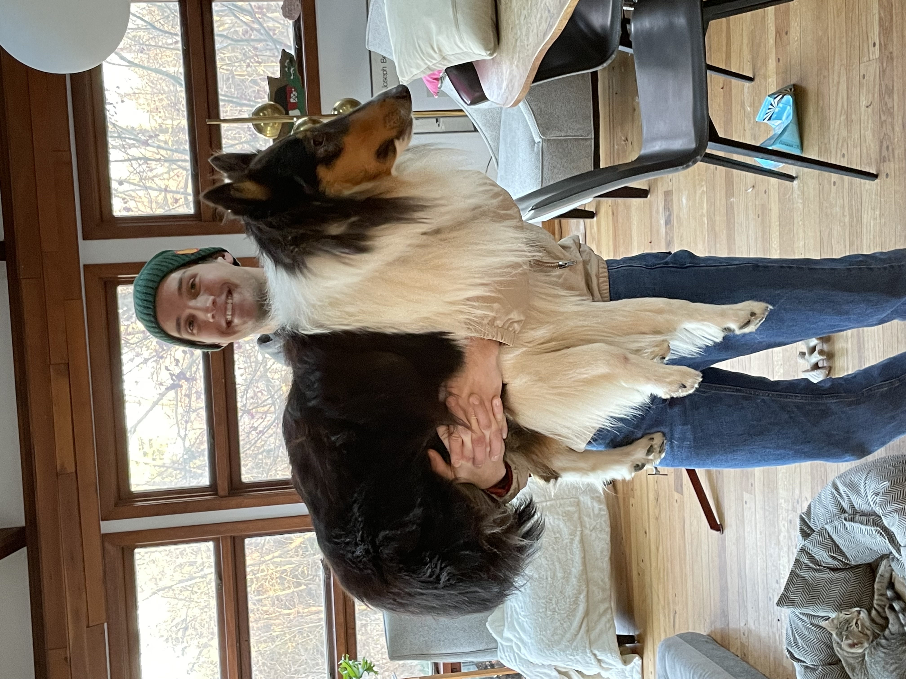
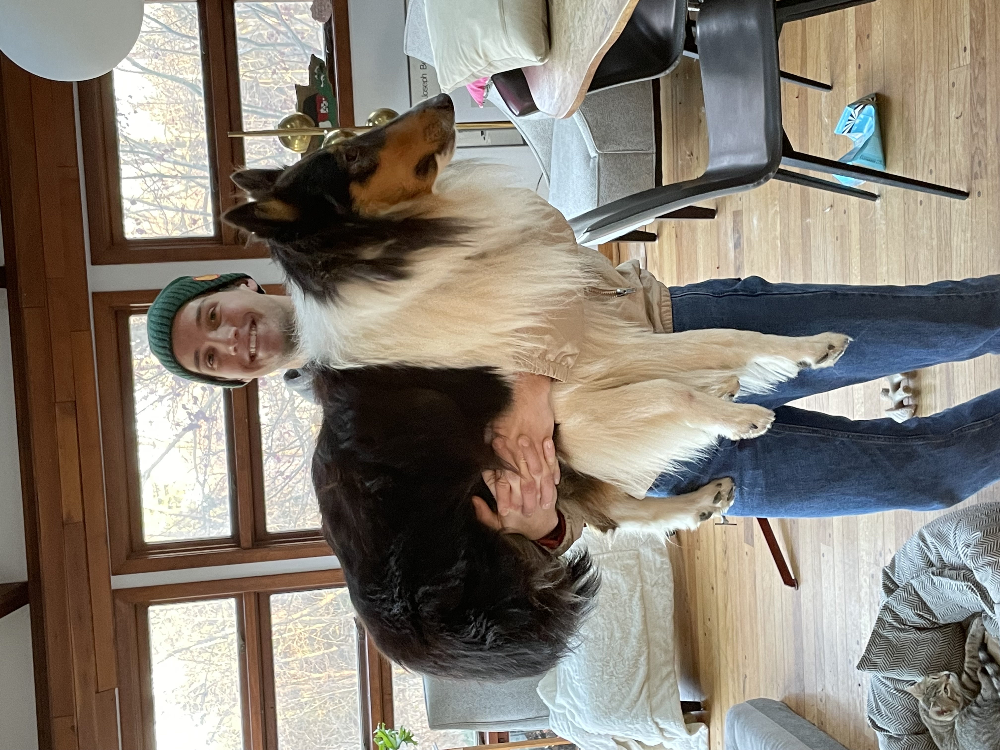
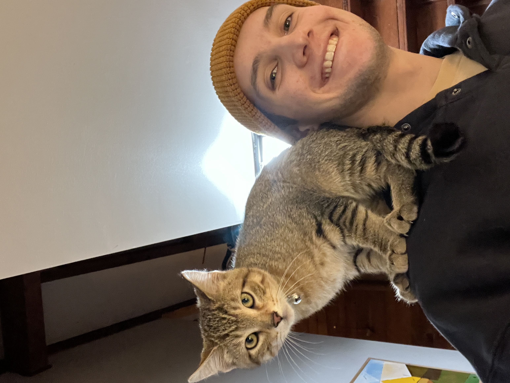
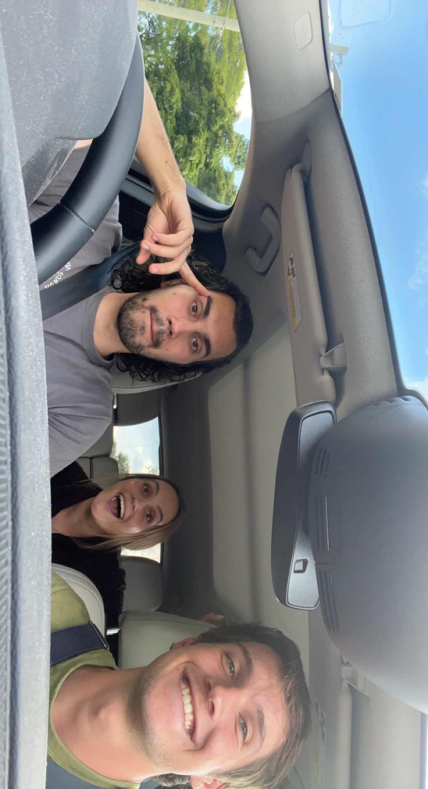
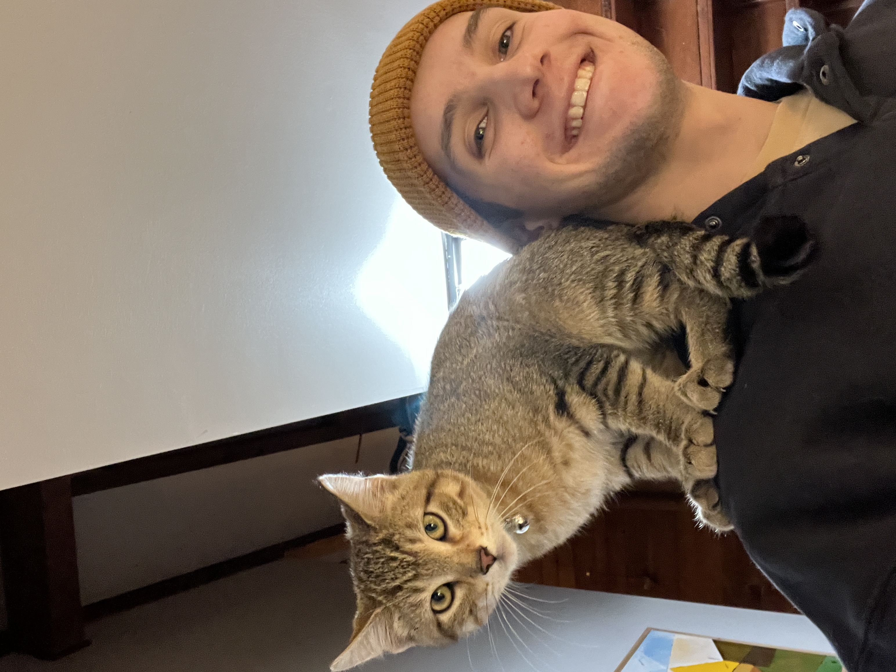
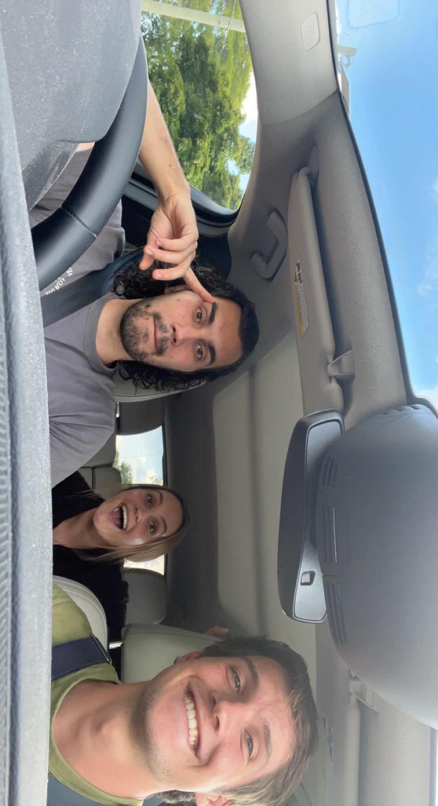

Gordon Lewis
Please Note: The University of Michigan Engineering Honor Code requires that class projects are made private on GitHub. Please email me if you would like to see these projects and I can contact the engineering department.
Please Note: The University of Michigan Engineering Honor Code requires that class projects are made private on GitHub. Please email me if you would like to see these projects and I can contact the engineering department.
 

 


